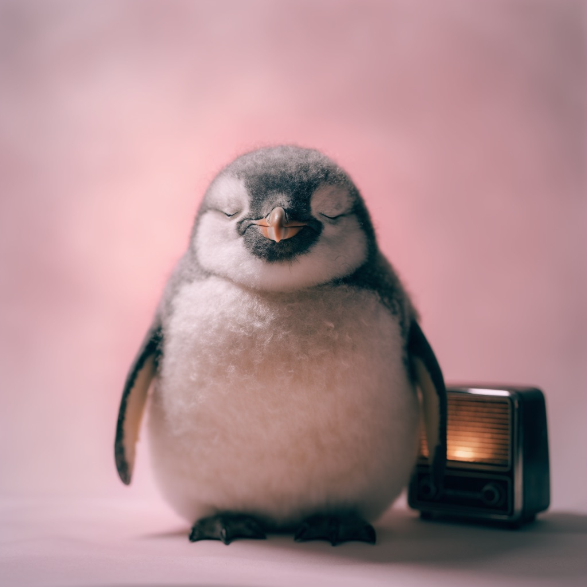
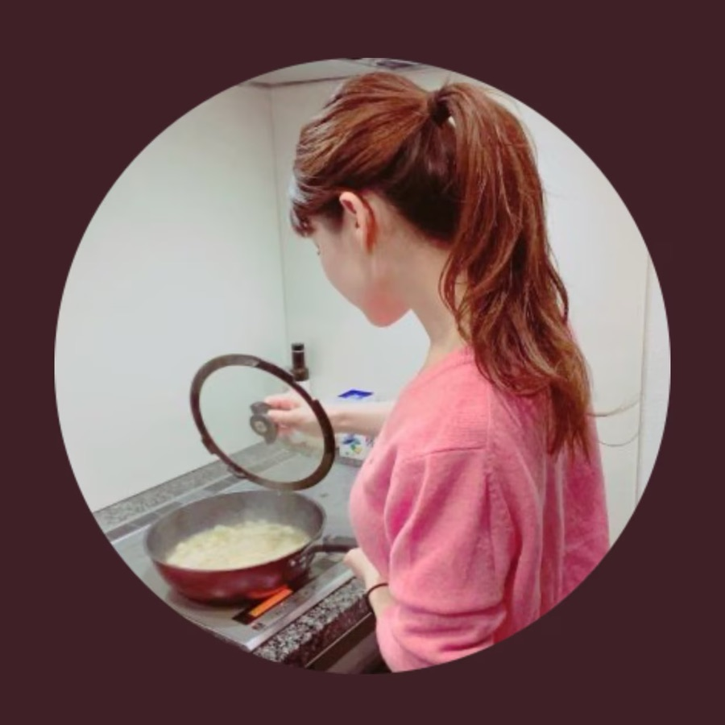

🐧 EVERYDAY LIFE⚡ 31 SEC
A podcast that gives me a view I did not have 🎧

The Pick
I like this podcast by a person called Ebinpu.
Smart Host
She is a woman in her mid-30s from Kansai, and she mainly gives advice about love and marriage-hunting, and when I listen, I think, "This person is smart."
New View
Also, I get to know a view I didn't have, like, "Oh, adult women think like that," and it feels like my world gets wider.
Kansai Dialect
Her Kansai dialect also feels nice to listen to.
Not So Funny
It's not the kind of funny that makes you laugh a lot, but more like, "I see," and I learn something.

PREVIOUS POST
The best way to kill time at Nagoya Station is a bookshop